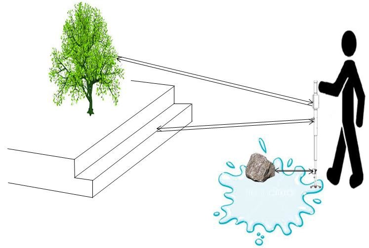

Effective Fast Response Smart Stick for Blind People
Visually impaired people are the people who can't identify smallest detail with healthy eyes. Those who have the visual acuity of 6/60 or the horizontal extent of the visual field with both eyes open less than or equal to 20 degrees, these people are considered blind . Such people are in need of aiding devices for blindness related disabilities. As described in 10% of blind have no usable eyesight at all to help them move around independently and safely. The electronic aiding devices are designed to solve such issue.
Visually impaired people find difficulties detecting obstacles in front of them, during walking in the street, which makes it dangerous. The smart stick comes as a proposed solution to enable them to identify the world around. In this project we propose a solution, represented in a smart stick with infrared sensor to detect stair-cases and pair of ultrasonic sensor to detect any other obstacles in front of the user, within a range of four meters. Moreover, another sensor is placed at the bottom of the stick for the sake of avoiding puddles. Speech warning messages and the vibration motor are activated when any obstacle is detected.
This proposed system uses the Arduino microcontroller system, vibration motor and differnt sensor. The stick is capable of detecting all obstacles in the range 4 meter during 39 ms and gives a suitable respect message empowering blind to move twice his normal speed because she/he feels safe. The smart stick is of low cost, fast response, low power consumption, light weight and ability to fold.